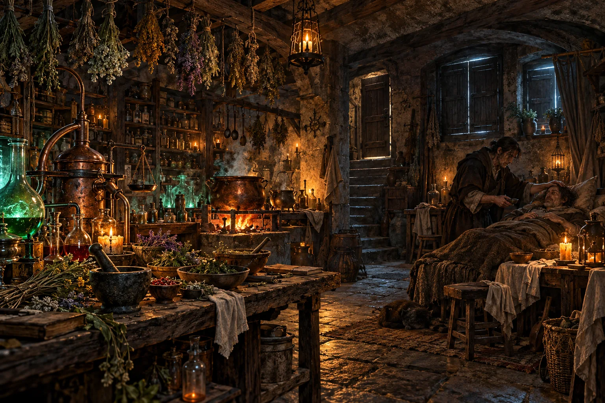

Kuchyně
Tohle není obyčejná kuchyně. Vznikla v utajení jako odpověď na tvrdý režim, který vládne království. Mocné chudina nezajímá, a tak se několik dobrých alchymistů rozhodlo načerno pomáhat lidem s nemocemi, které by pro ně jinak mohly mít nedozírné následky.
Tajemství kuchyně nesmíš nikomu prozradit. Pokud však alchymistům pomůžeš s jejich prací, můžeš získat zkušenosti, které tě přiblíží k tvému cíli.
Úkoly v kuchyni
Alchymisté pro tebe zatím nemají připravené úkoly.